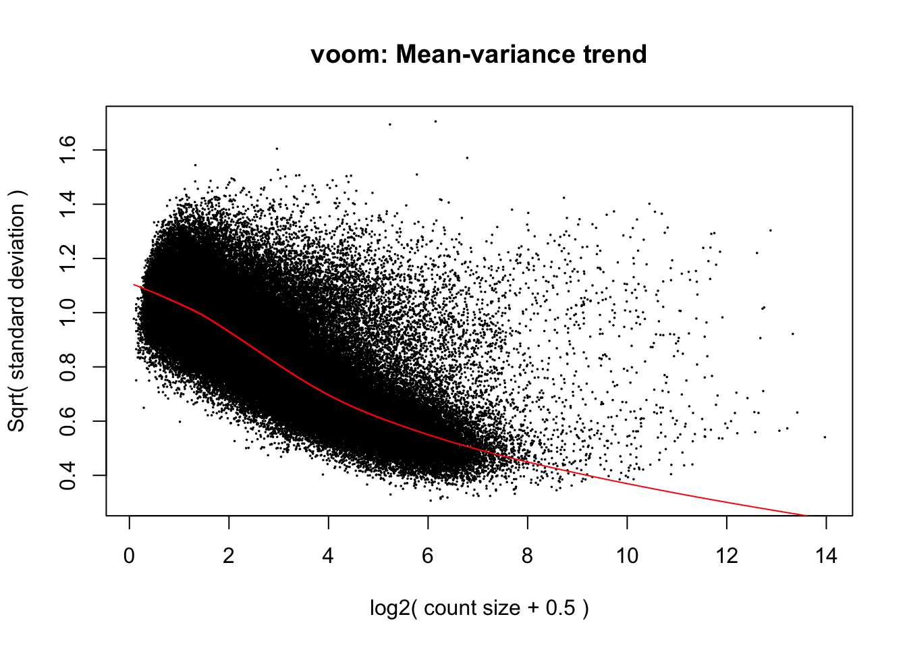
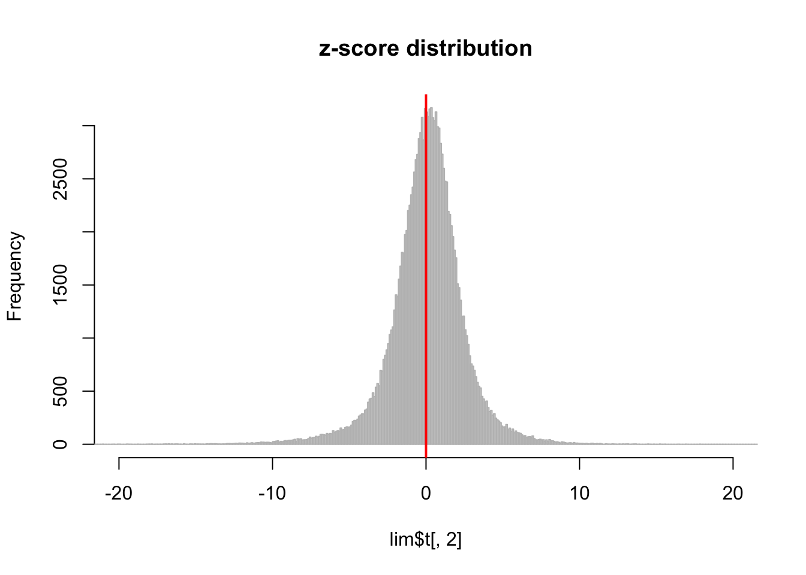

# code from Michelle
countdata_filt<-read.table("../data/after_filter/data.chrfl.txt.mappPE.mean0.8fl", header=F)
header<-read.table("../data/after_filter/header.txt",header=F)
metapeaks.hg19.filt.raw<-read.table("../data/after_filter/comm.hg19.bed.ortho.hg19.mappinput.chrfl.mappPE.mean0.8.bed.mappfl",header=F)
metapeaks.panTro3.filt.raw<-read.table("../data/after_filter/comm.hg19.bed.ortho.panTro3.mappinput.chrfl.mappPE.mean0.8.bed.mappfl",header=F)
rownames(countdata_filt) <- metapeaks.hg19.filt.raw[,4]
colnames(countdata_filt)<-as.matrix((header[1,]))
colnames(metapeaks.hg19.filt.raw) <- c("Chr", "Start", "End", "Peak")
colnames(metapeaks.panTro3.filt.raw) <- c("Chr", "Start", "End", "Peak")
countdata_filt_noH20961 <- countdata_filt[,c(1,2,3,5,6,7,8,9,10,11,12,13,14,15,16,17,18,19,20,
21,22,24,25,26,27,28,29,30,31,32,33,34)]
H3K9countdata_noH20961<-countdata_filt_noH20961[,c(2,5,6,7,8,10,13,15,17,18,19,20,23,26,27,32)]
chipcounts100 = H3K9countdata_noH20961[apply( H3K9countdata_noH20961>0,1,sum) > 10, ]
condition_chip = c("H", "H", "H", "C", "C", "C", "C", "H", "H", "H", "C", "H", "H", "C", "C", "H")
input <- list(counts= chipcounts100, condition = condition_chip)dgecounts = calcNormFactors(DGEList(counts=input$counts,group=input$condition))design = model.matrix(~input$condition)
v = voom(dgecounts,design,plot=TRUE) ## limma
lim = lmFit(v)
lim = eBayes(lim)
saveRDS(lim, file="../output/VL.fit.RDS")hist(lim$t, breaks=400, xlim=c(-20,20),col="lightgrey", border="gray", main ="z-score distribution")
abline(v=0,col="red",lwd=2)
resid <- v$E - lim$coefficients %*% t(lim$design)
d <- svd(resid)
plot(d$d, ylab="singlar value")pcafit <- prcomp(t(resid))
summary(pcafit) # print variance accounted for ## Importance of components:
## PC1 PC2 PC3 PC4 PC5
## Standard deviation 110.5986 101.9606 92.3218 89.10218 85.22032
## Proportion of Variance 0.1274 0.1083 0.0888 0.08271 0.07566
## Cumulative Proportion 0.1274 0.2357 0.3245 0.40725 0.48291
## PC6 PC7 PC8 PC9 PC10
## Standard deviation 81.47223 80.51915 77.97416 76.24560 74.83194
## Proportion of Variance 0.06915 0.06754 0.06334 0.06056 0.05834
## Cumulative Proportion 0.55207 0.61961 0.68295 0.74352 0.80186
## PC11 PC12 PC13 PC14 PC15
## Standard deviation 72.55173 68.79634 68.12143 65.95788 5.58715
## Proportion of Variance 0.05484 0.04931 0.04835 0.04532 0.00033
## Cumulative Proportion 0.85670 0.90601 0.95435 0.99967 1.00000
## PC16
## Standard deviation 7.106e-13
## Proportion of Variance 0.000e+00
## Cumulative Proportion 1.000e+00plot(pcafit,type="lines") # scree plot plot(pcafit$x,col=as.factor(input$condition),pch=16)
grid()
legend("topright",c("Human", "Chimp"), col=c("red","black"),pch=16)mod = model.matrix(~input$condition)
mod0 = model.matrix(~1,data=as.data.frame(input$condition))
svobj = sva(v$E,mod,mod0,n.sv=svout)## Number of significant surrogate variables is: 5
## Iteration (out of 5 ):1 2 3 4 5modSv = cbind(mod,svobj$sv)
cm <- c(0,1,rep(0, svobj$n.sv))
lim2 <- lmFit(v, modSv)
lim2 <-contrasts.fit(lim2, cm)
lim2 <-eBayes(lim2)
HvC = topTable(lim, coef=2, adjust="BH", number=Inf, sort.by="none")
sig.HvC = HvC[HvC$adj.P.Val < .01, ]
HvC2 = topTable(lim2, coef=1, adjust="BH", number=Inf, sort.by="none")
sig.HvC2 = HvC2[HvC2$adj.P.Val < .01, ] Total number of regions: 141287
Using BH adjusted p value of 0.01 as cut off, number of signficant regions:
* before removing confounders: 13446, percentage: 9.52%
* after removing confounders: 15830, percentage: 11.2%
Number of regions gone after removing confounders: 406
Number of regions added after removing confoudners: 2790
This R Markdown site was created with workflowr